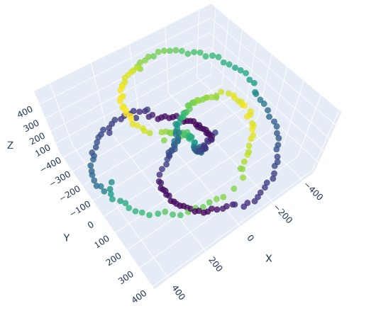

Projects
Here are some of the projects I have worked on:
Experimental investigation of optical vortices
The goal of the project was to investigate exparimentally the propagation of optical vortices. It was part of the research training program at Experimental Quantum Optics Group at Tampere University in 2024.
My assignments were first to take mesurements at different distances of propagation, then to analyze the data using MATLAB. For the analysis, I have created a custom MATLAB App which enables us to do the analysis using graphical interface. I was also using parallel workers to make the calculation faster.
Figure: the phase and the vortecis are shown in my custom MATLAB App.
Skills: time managmeent, groupwork, measuring, reporting.
Time series data analysis
The goal of the project was to implement and improve the novel method of the research group for time sereis data classification. It was part of my internship at Data and Compute Intensive Sciences Research Group at HUN-REN Wigner Research Centre for Physics from the summer of 2024 to present.
My assignments were to implement the method in python then, after introducing new parameters, to run it on GPUs and evaluate the accuary of the method. For the calulations python and PyTorch package were used and GitHub for version control. About our results we are currently writing scientific articles.
There were a summer school for high school students, where I supervised and showed the students how our method worked.
Figure: the transformed feature space. Source: arXiv:2307.01930 [cs.LG]
Skills: groupwork, computational physics, teaching.
Encoding knots in light beams
The goal of the project was to encode topologial knots in the superopition of Laguerre-Gaussian beams. It was part of my research training at Theoretical Optics and Photonics at Tampere University in 2023.
My assignments were to do the necessary calculations, then to create a simulation in python and run it on Google Colaboratory. Then to analyze the generated data and plot it in a right way to show the knot.
Figure: the encoded trefoil knot.
Skills: theoretical and computational physics, presentation, time managmeent.
Language Learning App
The goal of the project was to create a custom app which helps me learn the vocabulary of a new language, namely Finnish. I have included several features in the app which I find useful in my learning. I have created it in python and during the project I learnt how to use many python libraries to for example translate and read text. I created it in 2023 and I use the app regularly.
Code: github.com/halmosb/SuomiApp
Figure: some of the settings of the app.
Skills: programming, creating complex sotware.
Robot and computer vision
The goal of the project was to build a robot and its communication protocol with the server, then to analyze the video from its camera with different computer vision techniques. It was part of my internship at Data and Compute Intensive Sciences Research Group at HUN-REN Wigner Research Centre for Physics in 2022 - 2024.
My assignments were to implement the code which controls the movement and the sensors of the robot, then to analyze the data from them. The code was written in python and the video analysis were done by OpenCV and PyTorch.
Code: github.com/halmosb/Wigner-Robot
Figure: the robot during its building.
Skills: groupwork, research, computational physics, programming, computer vision.
Simulating error correction for quantum computers
The goal of the project was to simulate the repetition code, which is an error correcting protocol for quantum computers. It was part of my high school internship at Department of Theoretical Physics at Budapest University of Technology and Economics at 2021 - 2022.
My assignments were to implement the simulation in python using the Qiskit library and run it on Google Colaboratory, then to analyze and plot the results. The research was presented at a university student conference (OTDK) where I got special award.
Figure: the quantum circuit which implements the repetition code.
Skills: groupwork, research, reporting, presenting, simulating.
Measurements with myDAQ
The goal of the project was to perform high school level physics measurements with the myDAQ device. It was part of a competition organized by the NI Hungary Kft. in 2019 - 2020.
My assignments were to create the electrical circuits and LabVIEW codes for the measurements, then to perform them and present the results.
Figure: the measurement setup.
Skills: groupwork, research, reporting, presenting.
Special game for disabled children
The goal of the project was to create a special game for first and second year elemntary school students at Movement Development Primary and Secondary School in 2019. The students there have numerous physical disabilities, therefore the game for them has to be custom made: the goal was to create a fun game which can be played with only 2 buttons on the keyboard. I have created a game where there are different animals on the image and the players has to choose which animal (or which animal sound) corresponds to which animal. An improved version of the game is still used.
Game (only in Hungarian): halmosb.github.io/Mozgasjavito-jatek/
Code: github.com/halmosb/Mozgasjavito-jatek
Figure: the logo of the Movement Development School.
Skills: programming, creating special game, empathy, openness.